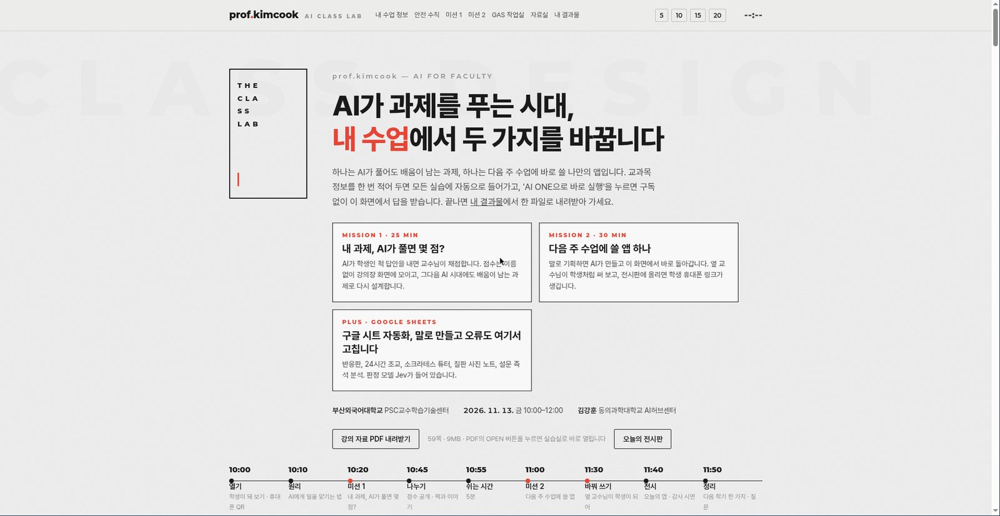
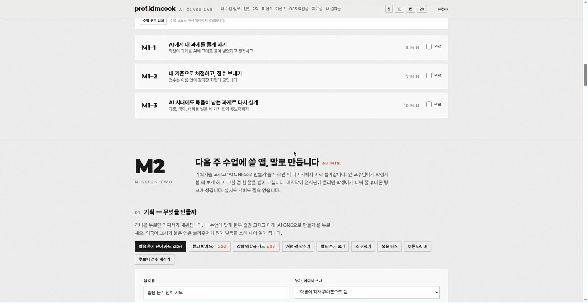
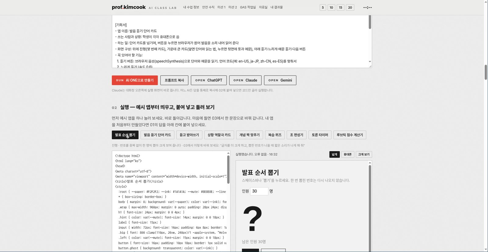

DIT AI-ONE 지능형 라우팅 · 샌드박스 자가치유 스튜디오 · 실시간 D1 참여판으로 완성한 교수자 실전 연수 시스템
🚀 실시간 시스템 바로가기: kimcook-edu.pages.dev ↗
지난 1년 동안 저는 전국 전문대학 법인협의회와 여러 대학 교직원을 대상으로 AI 활용 특강을 다녔습니다. 강의실 반응은 늘 좋았습니다. 문제는 그다음이었습니다.
일방적으로 듣는 특강은 '이해'는 만들지만 '습관'은 만들지 못합니다. 90분짜리 강의에서 바꿔야 할 것은 지식의 양이 아니라 강의가 끝난 순간 교수님 손에 남아 있는 것입니다. 그래서 설계 원칙을 한 줄로 다시 세웠습니다.
"오늘 90분 안에, 각자가 자기 교과목용 웹앱 하나를 만들어 학생에게 배포한다."
2026년 11월 13일 금요일 10:00~12:00, 부산외국어대학교 PSC교수학습기술센터의 '교수자 AI 활용 맞춤형 연수'가 그 첫 무대입니다. 이 글은 그 연수를 위해 직접 만들고 배포한 실습 플랫폼 AI Class Lab(kimcook-edu.pages.dev)의 설계 기록입니다. 코딩을 전혀 모르는 교수 60명이 같은 강의장에서 동시에 접속해, 설치도 회원가입도 없이 30분 만에 자기 앱을 띄우고 학생용 링크까지 받아 가는 구조입니다.
플랫폼은 강의안이 아니라 시간표입니다. 첫 화면에 오늘 할 일 두 개만 남겼습니다.
| 시간 | 구간 | 내용 |
|---|---|---|
| 10:00 | 열기 | 학생이 돼 보기 · 휴대폰 QR |
| 10:10 | 원리 | AI에게 일을 맡기는 법 |
| 10:20 | 미션 1 (25분) | 내 과제, AI가 풀면 몇 점? |
| 10:45 | 나누기 | 점수 공개 · 짝과 이야기 |
| 10:55 | 쉬는 시간 | 5분 |
| 11:00 | 미션 2 (30분) | 다음 주 수업에 쓸 앱, 말로 만듭니다 |
| 11:30 | 바꿔 쓰기 | 옆 교수님이 학생이 되어 |
| 11:40 | 전시 | 오늘의 앱 · 강사 시연 |
| 11:50 | 정리 | 다음 학기 한 가지 · 질문 |
미션 1은 AI가 학생인 척 내 과제를 풀게 하고, 교수가 평소 기준으로 채점합니다. 점수는 이름 없이 강의장 화면에 모여 분포가 되고, 그 분포를 보며 "AI 시대에도 배움이 남는 과제"로 다시 설계합니다. 미션 2는 기획서를 한 문장씩 채우면 AI가 HTML 앱 하나를 만들어 주고, 그 자리에서 실행해 보고, 옆 교수에게 써 보게 하고, 전시판에 올려 학생용 링크를 받습니다.
90분 안에 이 흐름이 끊기지 않으려면 기술적으로 네 개의 병목을 먼저 치워야 했습니다. 이 글의 나머지는 그 네 개를 어떻게 뚫었는지에 대한 기록입니다.

연수 첫 시간에 가장 많이 나오는 말은 "저는 유료 결제를 안 했습니다"입니다. 참가자 전원에게 ChatGPT Plus나 Claude Pro를 사 오라고 할 수는 없습니다. 그렇다고 제 API 키를 화면에 띄워 드릴 수도 없습니다. 키 하나가 새면 그날 연수 전체가 끝납니다.
구조는 단순합니다. 정적 페이지는 Cloudflare Pages가, AI 호출은 같은 프로젝트의 Pages Function(functions/api/ai.js)이 맡습니다. 브라우저는 우리 서버에만 말을 걸고, 진짜 API 키(AI_GATEWAY_API_KEY)는 Cloudflare의 비밀값 저장소에만 있습니다. 개발자 도구를 다 열어 봐도 키는 한 글자도 나오지 않습니다.
참가자에게는 '수업 코드' 한 개만 알려 줍니다. 강의장 화면에 크게 띄우고, QR 링크(/?c=코드)로 들어오면 자동 입력됩니다. 이 코드는
참가자는 모델 이름을 모릅니다. 알 필요도 없습니다. 서버가 실습 ID를 보고 모델을 고릅니다.
실습 ID tier 모델 상한 토큰
m1-1 ~ m1-3 balanced Claude Sonnet 5.5 6,000 ~ 8,000
s1-1 (짧은 요약) fast Claude Haiku 5.5 1,500
s4-4 (Apps Script) strong Claude Opus 5.5 12,000
vibe (수업 앱) strong Claude Opus 5.5 12,000
gas-fix2 (재수정) strong Claude Opus 5.5 12,000각 tier에는 폴백 체인이 붙어 있습니다(예: Opus 5.5 → Sonnet 5.5 → Sonnet 5). 게이트웨이가 429를 내면 잠깐 기다렸다 같은 모델을 두 번 더 시도하고, 그래도 안 되면 다음 모델로 내려갑니다. 답 위에는 "자동 선택 · Claude Opus 5.5 — 코드 한 파일을 끝까지 틀리지 않게 써야 해서"처럼 고른 모델과 이유가 표시됩니다. 참가자는 이 한 줄에서 "모델마다 잘하는 일이 다르다"는 원리를 배웁니다. 강의 내용이 UI 안에 들어 있는 셈입니다.
연수장은 공유기 하나를 60명이 나눠 씁니다. 실제로는 IP 하나에 요청 60개가 몰리는 구조라, 사람별 한도만 걸면 아무 의미가 없습니다. 그래서 한도를 5겹으로 겹쳤습니다.
IP·10분 1,500회 (연수장 전체 한도로 동작)
동시 처리 150개 (브라우저를 닫으면 즉시 반납)
수업 코드·하루 2,500회
전체·하루 3,000회
전체·분당 100회 (게이트웨이 자체 한도 120/분의 안전선)숫자는 코드가 아니라 환경변수로 뺐습니다. 다음 연수가 30명이면 재배포 없이 숫자만 바꿉니다. 여기에 잘못된 코드를 10분에 1,000번 넣으면 그 IP를 잠그는 장치를 따로 뒀습니다. 오타가 잦은 현장이라 한도는 넉넉하게, 대신 잠기면 올바른 코드를 넣어도 응답하지 않습니다. 잠금 중에 정답 여부를 알려 주면 그것 자체가 코드를 맞혀 가는 힌트가 되기 때문입니다.
요청 자체의 상한도 분명히 뒀습니다. 한 번에 12,000자, 대화 전체 40,000자, 24턴, 본문 6MB, 첨부 파일 3개(10만 자/15만 자), 이미지 4장. 답이 길어져 잘리면 서버가 이어쓰기를 요청하고(cont), 첫 글자까지 100초·글자 사이 60초·전체 600초에서 스트림을 끊습니다. 강의 중에 화면이 무한 로딩으로 멈추는 것이 가장 나쁜 실패라, 끊기더라도 이유를 한국어로 말해 주도록 했습니다.
"내 강의계획서를 읽고 정리해 줘" 같은 실습을 위해 PDF·워드·PPT·한글(HWPX)·엑셀·이미지에서 글자를 뽑는데, 이 일은 브라우저 안에서 합니다(doc-reader.js). 서버로 올라가는 것은 원본 파일이 아니라 추출된 글자뿐입니다. 개인정보 안내를 한 장 더 붙이는 것보다, 구조적으로 파일이 서버에 남지 않게 만드는 편이 정직합니다.
비전공자가 바이브코딩에서 멈추는 지점은 딱 하나입니다. 빨간 오류 문구입니다. 코드가 틀린 것이 아니라, 오류를 'AI에게 물어볼 문장'으로 바꾸는 방법을 모르는 것입니다. 60명 중 한 명이 여기서 멈추면 강사 한 명이 그 자리로 걸어가야 하고, 그 3분 동안 나머지 59명이 흐트러집니다.
앱을 페이지 안에서 그대로 실행하면, 참가자가 만든 코드가 실습 페이지 자체를 깨뜨릴 수 있습니다. 그래서 실행은 iframe에 srcdoc으로 넣고, sandbox="allow-scripts allow-forms allow-modals allow-downloads allow-popups"만 엽니다. allow-same-origin은 주지 않습니다. 실행 칸은 우리 페이지의 쿠키도, 저장소도, DOM도 볼 수 없는 다른 세계가 됩니다. 여기에 localStorage가 막힌 환경에서도 앱이 죽지 않도록 메모리 기반 대체 저장소를 미리 심어 둡니다.
실행 칸 안에는 작은 감시 스크립트를 자동으로 끼워 넣습니다. 이 스크립트가 error 이벤트(파일명·줄 번호·메시지)와 unhandledrejection, 그리고 정상 로드를 부모 창에 postMessage로 알립니다. 화면에는 이렇게 뜹니다.
오류 1개: Cannot read properties of null (reading 'value') (줄 42)
[ 오류를 AI에게 물어볼 글 복사 ]이 버튼을 누르면 3초 안에 클립보드에 이런 글이 담깁니다.
이 웹앱을 실행하니 아래 오류가 났어.
- Cannot read properties of null (reading 'value') (줄 42)
원인을 한 줄로 설명하고, 고친 곳만 아래 형식으로 알려 줘.
<<<<<<< 찾기
(지금 코드에서 바꿀 부분을 한 글자도 틀리지 않게, 3줄 안팎으로)
=======
(바꾼 내용)
>>>>>>> 바꾸기
[지금 코드]
(현재 HTML 코드 전문)참가자가 하는 일은 붙여 넣기와 다시 받기, 두 번의 클릭입니다. 강사가 달려갈 필요가 없습니다. 이것이 이 플랫폼에서 말하는 자가치유(Self-Healing) 루프입니다. 오류를 고쳐 주는 AI가 아니라, 오류를 설명 가능한 문장으로 바꿔 주는 장치가 핵심입니다.

전체 코드를 다시 받으면 답이 길고 느리고 비쌉니다. 그래서 시스템 프롬프트에 위의 <<<<<<< 찾기 / ======= / >>>>>>> 바꾸기 형식을 강제하고, 화면이 그 블록만 골라 코드에 끼워 넣습니다(vibe/patch.js).
여기에 '되돌리기'를 붙였습니다. 비전공자에게 가장 필요한 기능은 실행이 아니라 되돌리기입니다. 되돌릴 수 있다는 것을 알면 실험을 두려워하지 않습니다.
실습형 연수의 진짜 적은 기술이 아니라 침묵입니다. 60명이 각자 노트북을 보고 있으면 강사는 아무것도 모릅니다. 손을 들게 하면 아무도 들지 않습니다.
강의장 큰 화면에 띄우는 /live는 Cloudflare D1(서버리스 SQLite) 위에서 돕니다. 네 개의 화면을 숫자 키 1~4로 넘깁니다.
D1 테이블 하나(posts)에 방(room), 종류(kind), 익명 클라이언트 ID, 토큰, 제목·본문·점수·메타·HTML을 담습니다. 테이블은 첫 요청 때 코드가 스스로 만듭니다(ensureSchema). 운영자가 SQL을 미리 돌릴 필요가 없습니다.
재미있는 부분은 학생용 앱 링크입니다. 교수자가 앱을 전시판에 올리면 서버가 8~32자의 토큰을 만들고, ?app=<토큰> 주소를 돌려줍니다. 이 주소는 수업 코드 없이 열립니다. 학생에게 "수업 코드를 입력하세요"라고 할 수는 없으니까요. 대신
같은 실습 페이지라도 로그인은 없습니다. 대신 키가 다릅니다. 학생은 학생용 주소만 받고, 교수 화면은 4자리 PIN을 따로 누릅니다. 24시간 수업 조교(ta.html)는 여기서 한 걸음 더 갑니다. 학생 질문에 자료로 답할 수 있는지는 판정 모델 Jev가 먼저 판단하고, 자료에 근거가 없으면 AI가 지어내지 않고 교수 문답함에 쌓아 둡니다. "모르면 모른다고 말하는 조교"가 신뢰를 만듭니다.
연수는 하루로 끝나지만 수업은 15주입니다. 현장에서 만든 앱과 자동화가 다음 주에 혼자서도 돌아가야 연수가 성과가 됩니다. 그런데 강사 서버(제 AI ONE 키)는 영원히 열려 있을 수 없습니다.
Apps Script 작업실(/gas)에는 레시피 6개와 빈 종이가 들어 있습니다.
문제는 이 코드들이 강사 서버를 부른다는 점입니다. 그래서 공통 도우미(gas/00-common.gs)에서 서버를 부르는 구간만 표시해 두고, 빌드할 때 그 구간을 '내 Gemini 키로 직접 부르는 판'(gas/solo.gs)으로 치환합니다.
// <<SERVER … 연수 현장: 강사 서버(수업 코드) …
// SERVER>>치환된 코드는 레시피마다 soloCode로 함께 보관되고, PDF 키트에 담길 때 자동으로 혼자 쓰는 판이 됩니다. 참가자는 무료 Gemini 키(aistudio.google.com/apikey) 하나만 스크립트 속성에 넣으면, 연수가 끝난 뒤에도 비용 없이 같은 자동화를 돌립니다. 코드에 키를 직접 쓰지 않고 속성에서 읽게 하고, 키 모양(AIza…)을 검사하고, 저장 즉시 연결 확인까지 합니다.
앱 코드, 내가 AI에게 했던 말(기획 프롬프트와 수정 요청), 학생 링크, GAS 자동화 결과물을 한 권의 A4 PDF로 묶습니다(/kit). 인쇄 창에서 'PDF로 저장'을 고르면 끝입니다.
EMBEDDED_CODE) 줄을 지웁니다. 남의 PDF에 내 수업 코드가 찍혀 나가면 안 되니까요.[참가자 브라우저]
├─ 실습실 index.html (정적, 빌드 도구 없음)
│ ├─ 내 수업 정보 → localStorage (서버 전송 0)
│ ├─ 실행 칸 iframe srcdoc (sandbox, same-origin 없음)
│ │ └─ 감시 스크립트 → error/줄번호 → postMessage
│ ├─ 바뀐 곳만 패치 (VibePatch) + 되돌리기
│ └─ 내 결과물 → PDF 키트(kit.html) → 인쇄 → PDF
│
├─ /live 참여판 (강의장 큰 화면)
├─ /ta 학생 질문 → Jev 판정 → 근거 답변 또는 교수 문답함
├─ /gas Apps Script 레시피 6 + 빈 종이
└─ /check 접속 점검 (사이트·AI ONE·참여판·구글·음성) + 전산 요청문
[Cloudflare Pages]
├─ 정적 자산 (index/live/ta/gas/kit/check/studio + vendor)
├─ Functions
│ ├─ /api/ai AI ONE 게이트웨이 프록시 (키는 서버에만)
│ │ ├─ 실습별 모델 라우팅 + 폴백 + 이어쓰기
│ │ ├─ 수업 코드 SHA-256 대조 + 5중 한도
│ │ └─ SSE 스트리밍 (첫 글자 100s·유휴 60s·전체 600s)
│ ├─ /api/live 참여판 (D1, 토큰 기반 학생 링크)
│ ├─ /api/ta 24시간 조교 (D1, 자료 10만 자)
│ └─ /api/jev 판정 모델 (예/아니오·택일·단계 점수)
└─ D1 kimcook-edu-live (posts 테이블 자동 생성)
[GitHub Pages] skyman200.github.io/edu ← 예비 주소(같은 파일, Functions 없음 → pages.dev/api/ai 호출)
[Google] Apps Script(시트·드라이브·폼·메일) + Gemini(혼자 쓰는 판)배포는 ./deploy.sh 한 번입니다. 이 스크립트가 하는 일이 하나 더 있습니다. wrangler는 functions/를 현재 폴더에서 찾기 때문에 wrangler pages deploy .로 올리면 README와 .dev.vars(키 파일)까지 공개될 수 있습니다. 그래서 스크립트는 공개할 파일만 임시 폴더에 모아 그 폴더를 올립니다. 사고는 늘 급할 때 나므로, 사고가 날 수 없는 배포 명령 하나를 만들어 두는 것이 맞습니다.
같은 플랫폼을 만들고 싶은 교육자·개발자를 위해, 실제로 AI에게 준 프롬프트의 구조를 공개합니다.
수업에서 쓸 웹앱을 아래 기획서대로 만들어 줘.
[기획서]
- 앱 이름: (예: 발음 듣기 단어 카드)
- 쓰는 사람과 상황: (교수자가 수업 중 화면에 띄워 씀 / 학생이 각자 휴대폰으로 씀)
- 하는 일: (한 문장)
- 화면 구성: (위에서 아래로)
- 꼭 있어야 할 기능: (한 줄에 하나)
- 넣을 내용: (내 과목의 실제 내용 8~12개)
[만드는 규칙]
- HTML 파일 하나에 CSS와 JavaScript를 모두 넣어 줘. 외부 라이브러리·서버·로그인 없이 동작하게.
- 저장이 필요하면 브라우저(localStorage)에만. 학생 실명이나 학번 대신 번호를 쓰게.
- 프로젝터와 휴대폰 화면 모두에서 보기 좋게, 글자는 크게.
- 디자인: 밝은 종이색 배경(#F2F2F2), 거의 검은 글씨(#1A1A1A), 강조색 하나(#E54536), 경계는 얇은 선.
그라데이션, 이모지, 둥근 그림자 카드는 쓰지 마.
- 소리는 브라우저 내장 음성(speechSynthesis)만. getVoices로 언어 목소리를 고르고, 늦게 오면 voiceschanged를 기다리고,
없으면 화면에 안내. 버튼을 눌렀을 때만 소리가 나게.
- 처음 쓰는 사람도 알 수 있게 사용법을 한 줄 넣어 줘.
[답하는 방법]
- 전체 코드를 html 코드 블록 하나로 한 번에 줘. 설명은 세 줄 이하.
- 내가 고칠 점을 말하면 전체 코드를 다시 쓰지 말고, 바뀐 곳만
"<<<<<<< 찾기 / ======= / >>>>>>> 바꾸기" 형식으로 줘. 찾을 글은 코드에서 한 곳이어야 해.Cloudflare Pages Function 하나로 AI 프록시를 만들어라.
- 브라우저는 프록시에만 요청한다. API 키는 환경변수에서만 읽고 응답·로그·에러 메시지에 절대 넣지 않는다.
- 요청에는 수업 코드와 실습 ID가 들어온다. 코드는 SHA-256 해시로 저장된 값과 타이밍 세이프 비교한다.
- 실습 ID별로 모델과 최대 토큰을 표에서 고른다. 실패 시 폴백 체인을 순서대로 시도하고, 429면 같은 모델을 두 번까지 재시도한다.
- 한도: IP·10분, 동시 처리, 코드·하루, 전체·하루, 전체·분당. 모두 환경변수로 덮어쓸 수 있게 한다.
- 응답은 SSE로 흐른다. 첫 글자까지 100초, 글자 사이 60초, 전체 600초에서 끊고, 이유를 한국어로 알린다.
- 클라이언트가 보낸 model·system·tools·max_tokens는 무시한다. 역할과 글자만 통과시킨다.
- 잘못된 코드가 반복되면 IP를 잠근다. 잠금 중에는 올바른 코드에도 응답하지 않는다.실행 칸 iframe에 감시 스크립트를 자동 삽입해라.
- sandbox는 allow-scripts allow-forms allow-modals allow-downloads allow-popups만. allow-same-origin은 주지 마.
- error와 unhandledrejection을 잡아 메시지와 줄 번호를 부모 창에 postMessage로 보낸다.
- 부모는 오류 목록을 보여 주고, "오류를 AI에게 물어볼 글 복사" 버튼 하나로
[오류 목록 + 원인 설명 요청 + 바뀐 곳만 달라는 형식 + 지금 코드]를 클립보드에 넣는다.
- AI 답에서 "<<<<<<< 찾기 / ======= / >>>>>>> 바꾸기" 블록을 찾아 코드에 끼워 넣는다.
찾는 글이 코드에 한 곳만 있을 때만 바꾸고, 하나라도 실패하면 전체를 적용하지 않고 코드를 그대로 둔다.
- 적용 전 상태를 스택에 쌓아 '되돌리기'를 제공한다.| 항목 | 값 |
|---|---|
| 실습 프롬프트 | 30종 (미션 1~2, STEP 1~4, PLUS 4, GAS 작업실 4) |
| 예시 앱 | 9종 (발표 순서, 발음 카드, 받아쓰기, 역할극, 짝 맞추기, 퀴즈, 조 편성, 토론 타이머, 루브릭 계산기) |
| Apps Script 레시피 | 6종 + 빈 종이 |
| 강의 자료 | 59쪽 PDF |
| 참여판 화면 | 4개 (걱정 · 점수 · 전시 · 다음 학기) |
| AI 한도 | 5중 (IP·동시·코드·전체·분당) |
| 배포 | Cloudflare Pages(주소) + GitHub Pages(예비) + D1 + Apps Script |
이 플랫폼을 만들면서 가장 많이 바꾼 것은 기능이 아니라 실패했을 때의 모습이었습니다.
비전공 교수 60명이 한 강의장에서 90분 동안 앱을 만들고 배포하는 일은, 강사의 설명이 좋아서 되는 것이 아닙니다. 참가자가 넘어질 자리를 미리 없애 두었기 때문에 됩니다. 바이브 코딩의 실력은 프롬프트 문장력이 아니라, 이렇게 실패의 모양을 설계하는 능력입니다.
11월 13일 부산외대 연수에서 이 구조가 실제로 어떻게 작동하는지 확인하고, 다음 글에서 그 현장 기록을 정리하겠습니다. 코딩을 몰라도 괜찮습니다. 현장을 가장 잘 아는 사람이 가장 좋은 플랫폼을 만듭니다.
연재 허브로 바이브 코딩 실전기 전체 보기 1편 22종 시스템 · 2편 해커톤 플랫폼 · 3편 Unslop 디자인 · 4편 강의계획서 AI 체크